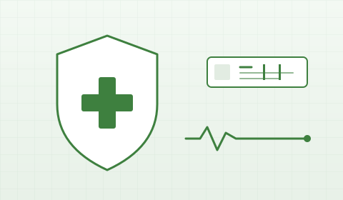

의료기기
식약처 인증을 받은 진단·의료 보조 기기. 디에스팜은 통합 제조 역량을 활용해 진단키트와 관절부위 활액 등을 안정적으로 공급합니다.
01 · DIAGNOSTIC KIT
코로나 진단키트
신속 항원 검사 기반의 셀프 / 의료기관용 진단 키트.
신속하고 정확한 자가 진단
비강 또는 구인두 검체를 통해 15분 이내 결과를 확인할 수 있는 신속 항원 진단 키트입니다. 의료기관·약국·소매·기관 단위 공급에 모두 대응합니다.
식약처 인증과 자체 품질관리 절차를 통과한 라인만 출하합니다.

- TYPE
- 신속 항원 검사 (RAT)
- SPECIMEN
- 비강 / 구인두 검체
- TURNAROUND
- 약 15분 이내 결과 확인
- CERT
- 식약처 의료기기 인증
02 · JOINT FLUID
관절부위 활액
관절 윤활을 보조하는 의료용 활액 라인.
의료기관 처치용 무균 충전 라인
관절강 내 주입을 통해 관절의 윤활성을 회복시키는 의료용 활액입니다. 무균 환경에서 충전·포장·검사가 이루어지며, 의료기관 단위로 공급됩니다.
03 · COMPLIANCE
인증 및 안전성
의료기기는 GMP / ISO 13485 시스템 하에 제조됩니다.
GMP
의료기기 GMP
식약처 의료기기 제조·품질관리 기준 적합.
ISO
ISO 13485
의료기기 품질경영 시스템.
CERT
제품별 인증서
품목 별 식약처 인증 번호 보유.
QC
로트별 시험
출하 전 로트 단위 품질 시험.
의료기기 거래처 / 단체 견적 문의
의료기관·도매·기관 단위 공급에 대응합니다.